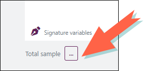

Verbatim codification
The analysis environment allows you to read the verbatim for coders according to a thematic grid constructed by you. "The codebook". It is an objective and systematic description of the text by coding each observation or sentence based on the defined themes.
To do this:
-
Click on the
 button.
button. -
Select Textual & semantic analysis.
-
Click Verbatim codification.
-
Select the text variable to be analyzed from the drop-down menu provided for this purpose.
-
Select the segmentation mode:
By sentence: Sentence-level coding assigns one or more themes to each sentence in an observation. This method allows you to cross-reference coding with the sentiment of verbatim (positive, negative, neutral).
By observation: Observation-level coding assigns one or more themes to an entire verbatim, without distinguishing between sentences. With this type of analysis, cross-referencing with verbatim sentiment is performed at the response level.
BEWARE: You can convert observation-level coding to sentence-level coding at any time.
During this conversion, the analysis is applied at the sentence level. Existing coding results are transferred to the first sentence of each observation.
If an observation contains multiple sentences, the remaining sentences can be coded manually or using the AI feature Code all uncoded observations.
Once coding is set to sentence-level, switching back to observation-level is no longer available. -
Create categories (coding variable) to enrich the codebook by clicking on the button .
NOTE: You can also generate a codebook using AI with the Create a codebook with AI feature
-
Create the themes that correspond to each category by clicking on Add a theme.
-
Proceed to the coding of the observations or the sentences of the corpus by checking the corresponding themes.
NOTE: You can also code observations using AI via the Code verbatim with AI feature.
The Uncoded observation button gives direct access to the next uncoded observation.
You can choose to display only observations that match a certain profile. To do this:
-
Click on the button
 .
.
-
Define the profile by selecting the variable(s) and the modalities to be used.
EXAMPLE: We only wish to codify the answers made by women.
-
-
(optional) Click on the
 button to select variables to display as signatures for each observation.
button to select variables to display as signatures for each observation.
-
(optional) Check the option Display characteristic extracts in order to be able to insert extracts during your coding.
If you have added extracts, you will be able to assign them in a table:
-
Drag and drop your text variable on the view.
-
From the Options tab, Calculation part, select Display characteristic extracts using the drop-down menu provided for this purpose.
-


Manage the categories (coding variables)
-
Click on the button to delete a category and associated themes. A confirmation message will appear, click Yes to confirm the deletion.

-
Click on the button
 to edit a category and associated themes.
to edit a category and associated themes.You can change the name of the category, and add, rename and delete themes.

Export Import a codebook
Export a codebook
The codebook can be exported for use in another survey for example. To do so:
-
Access the codification by clicking on Set up the codification.
-
Click on the Export button.
The generated file is in .cbk format, you can edit it through notepad.
The codebook is presented as follows:
Copy[Category name 1]
Theme 1
Theme 2
[Category name 2]
Theme 1
Theme 2

Import a codebook
To import a codebook, proceed as follows:
-
Access the codification by clicking on Set up the codification.
-
Click on the Import button.
-
Select the file to import.
Accepted file types : *.txt, *.text and *.cbk
-
Click on Load.
BEWARE: Warning, if you have already started setting up a codebook, it will be replaced by the imported codebook.